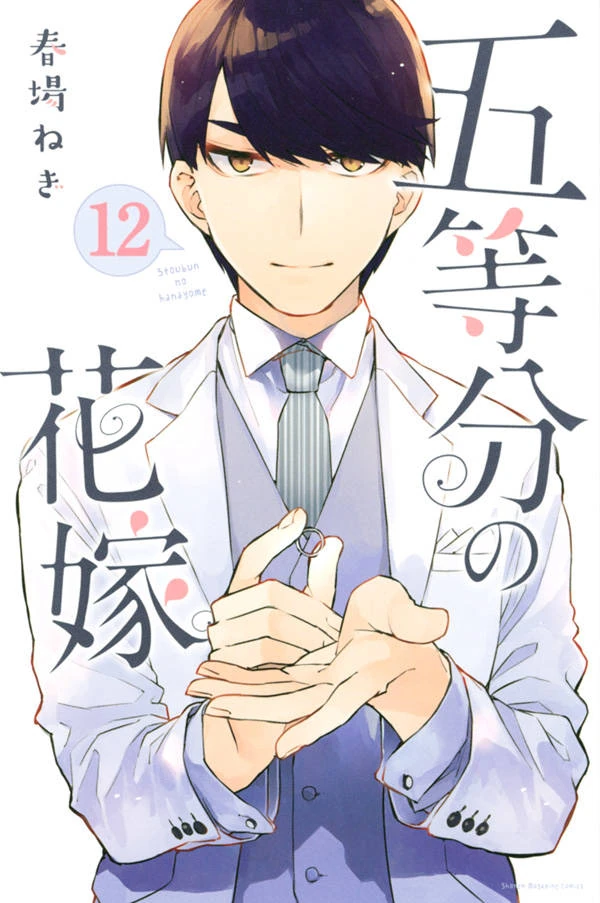
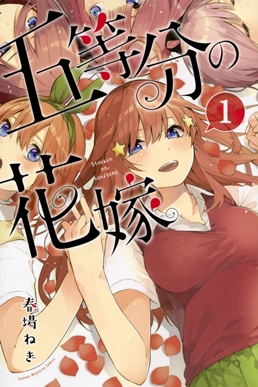
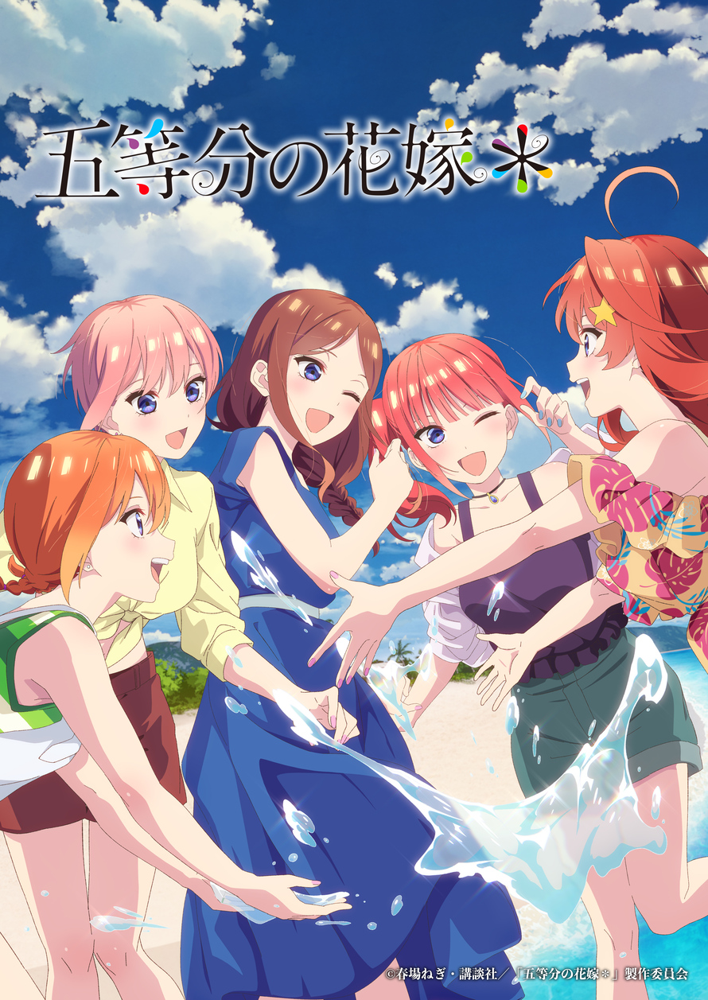

Discography
Tap judul lagu untuk mencarinya di Spotify ✿
Nakano Quintuplets — Lima Saudari Kembar
Pilih mode "Kamu Nakano yang Mana?" atau "Endingmu", lalu atur tingkat kesulitan — Easy 10 soal sampai Hardcore 50 soal, selalu acak tiap kali main.
OP, ED, insert song, sampai character song tiap Nakano bersaudara — lengkap dengan link pencarian Spotify.



 Anime · Season 1
Anime · Season 1Vol.01 · Anime Series
Fuutarou Uesugi, pelajar miskin namun cerdas, ditugaskan menjadi tutor privat bagi lima saudari kembar Nakano. Awal yang kacau dari kisah cinta yang penuh kejutan.
 Anime · Season 2
Anime · Season 2Vol.02 · Anime Series
Hubungan Fuutarou dengan kelima saudari semakin dalam. Perasaan tersembunyi mulai terungkap, membawa cerita ke babak yang lebih emosional dan dramatis.
 Film · 2022
Film · 2022Film · Anime Movie
Babak final. Semua pertanyaan terjawab — siapakah istri Fuutarou? Ending mengharukan yang tak terlupakan bagi jutaan penggemar.

Manga · OriginalOriginal Source · Manga
Manga orisinal karya Negi Haruba. Diterbitkan di Weekly Shōnen Magazine 2017–2020 dengan 122 chapter penuh cerita cinta kaya detail.

OVA · SpecialBonus · OVA & Special
Episode spesial eksklusif yang mengisahkan momen-momen yang tidak sempat tampil di series utama — liburan, festival, dan interaksi menggemaskan.
Detail Series
Sinopsis Lengkap
Tentang
Deskripsi
Kepribadian
Keluarga & Latar Belakang
Minat & Hobi
Fun Facts